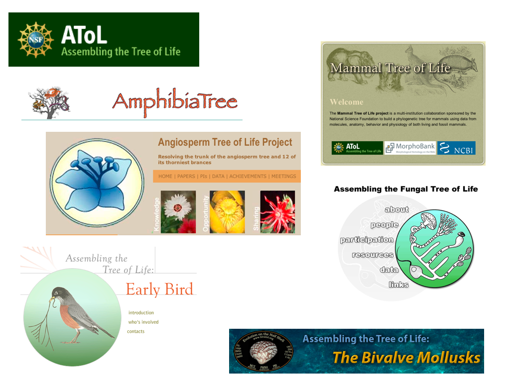
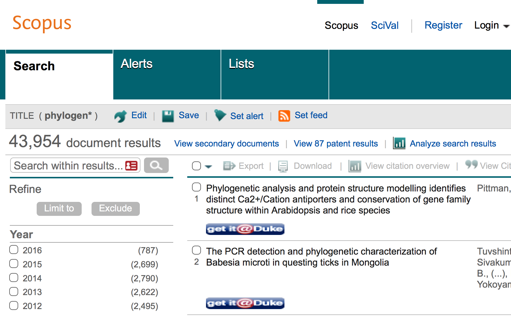
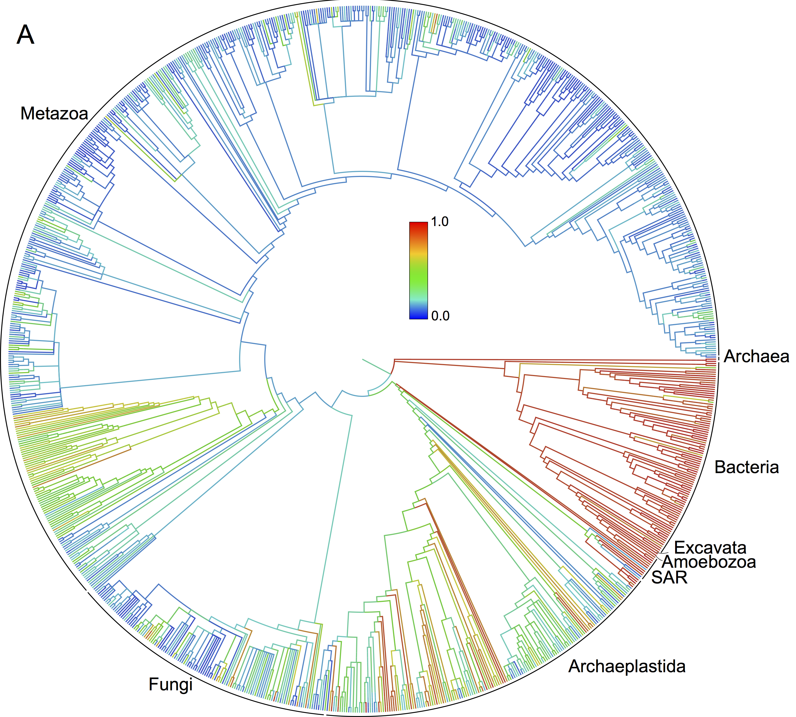
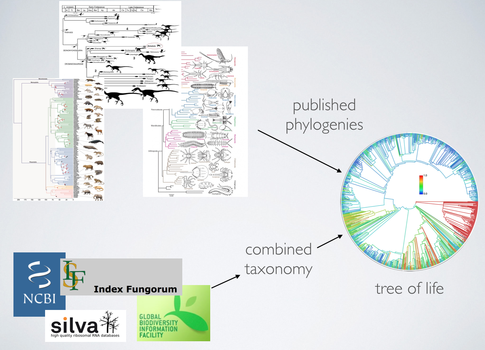
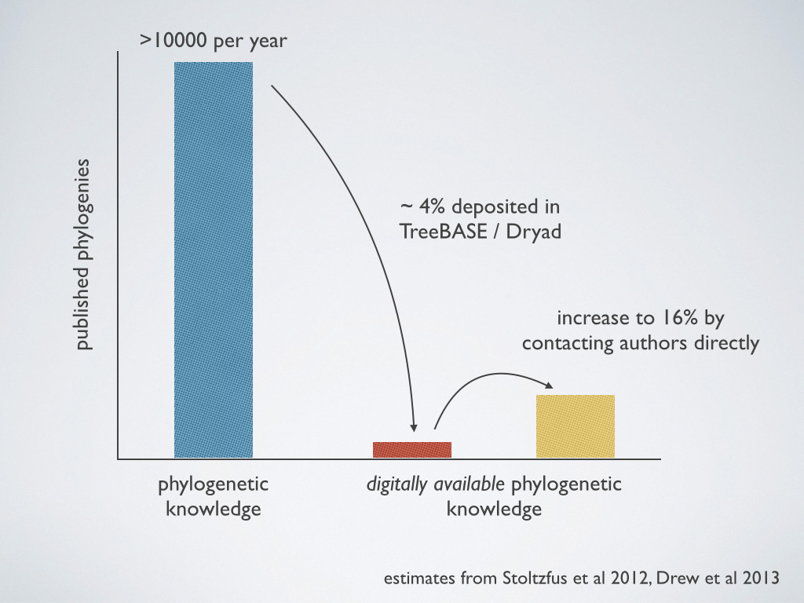
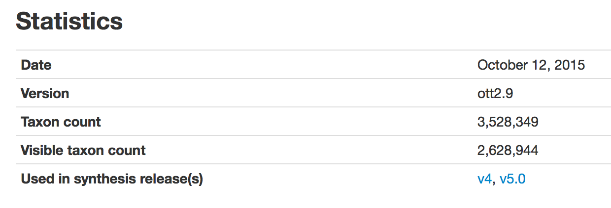
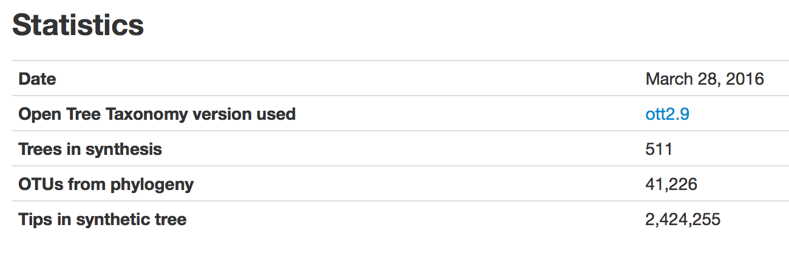
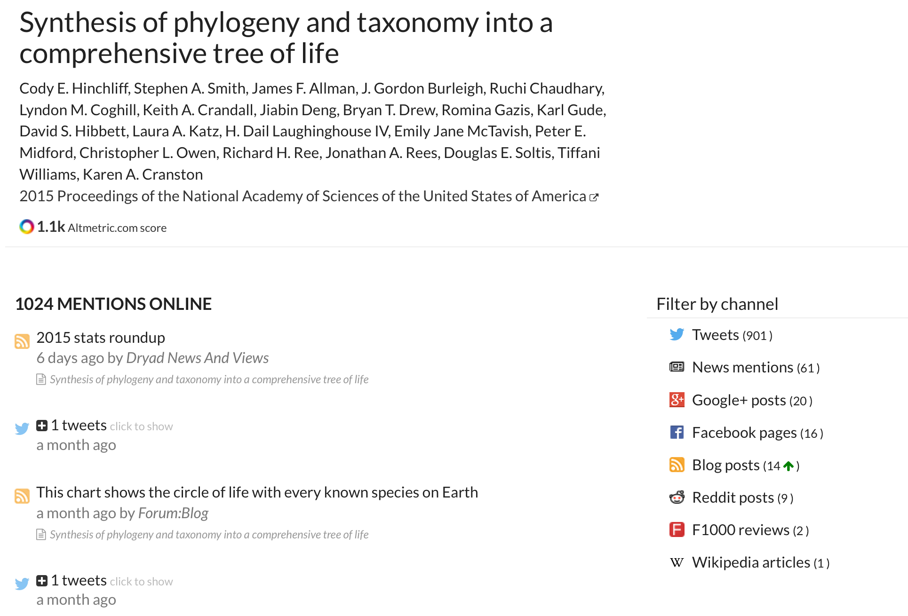
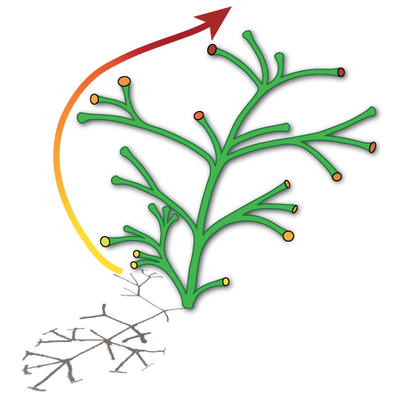

A comprehensive, online, updateable tree of life
So, where is the tree of life?


What do we know about the tree?
Can I browse / search / download it?
Summarize existing phylogenetic knowledge into a tree of life that is 1. Complete; 2. Online; 3. Updateable.


Phylogeny provides a mechanism through which to interpret the patterns and processes of evolution and to predict the responses of life to rapid environmental change. Phylogenies and phylogenetic methods are now being used to enhance agriculture, identify and combat diseases, conserve biodiversity, and predict responses to global climate change and to biological invasions.
Status
Original funding (2011 - 2013): 11 PIs, 10 institutions
Supplement (2013 - present): Cranston, Holder, Smith
Two Greatest Challenges
(Technical and social)
I. Publishing tree files not a community norm

phylesystem
A git-based data store for community-curated phylogenetic estimates. Bioinformatics (2015) 31 (17): 2794-2800
- 7757 trees from 3401 studies
- 4779 commits from 117 curators (90 non-opentree)
- git backend + python API + curation application
Biggest challenges
(Technical and social)
I. Publishing tree files not a community norm
II. Taxonomy resources are incomplete and out of date
Taxonomy woes
Many taxonomy databases; differ in coverage and fitness
Long lag taxonomy publication -> taxonomy databases
Taxa and names missing
Relationships out of date
Much data not openly available
Open Tree Taxonomy

- 7 input taxonomies + user-contributed patches
- clade-based input priority
- TNRS services to resolve synonyms, homonyms, etc


Infrastructure
Infrastructure
bold = version 2.0
- Web applications:
- study curator
- browsers for tree and for taxonomy
- Pipelines:
- taxonomy merging
- tree synthesis
- Databases:
- tree store (github)
- synthetic tree and taxonomy (neo4j)
- tree index (postgreSQL)
Interoperability via APIs
 |
rotl: R package wraps APIs |
 |
provides trees given species |
| imports trees for comparative analyses |
Other collaboration
| Providing taxonomy feedback | |
|  | Joint workshops, webinars |
Community building
Tree-for-all hackathon
U Michigan, September 2014
https://github.com/OpenTreeOfLife/hackathon
- Invited people to build on our APIs
- Participants from Arbor, rOpenSci, iDigBio, Supertree Toolkit, IPNI, Atlas Living Australia, Fossil Calibration Database, Species File Group
FuturePhy / Arbor / OpenTree workshop
U Florida, February 2016
https://blog.opentreeoflife.org/2016/03/09/futurephy-clade-workshops/
- Clades: barnacles, catfishes, beetles
- Participants: taxonomy, systematics, ecology, phylogenetic methods, bioinformatics, genomes, ontologies, and scientific illustration
- Tested tree input, custom synthesis, conflict visualization
Demo!
What could we do better?
Synthetic tree woefully underrepresents phylogenetic knowledge
| Clade | Tips | Phylo tips | % phylo |
|---|---|---|---|
| Embryophyta | 296,611 | 14,425 | 4.9% |
| Fungi | 309,631 | 628 | 0.2% |
| Metazoa | 1,467,443 | 21,323 | 1.5% |
| Insecta | 979,709 | 3098 | 0.3% |
Improving the tree
Incorporate more trees from phylesystem
Import trees from TreeBASE, Dryad
Scrape trees from images
Incorporate more taxonomy feedback / resources
Encourage more community input of trees
OpenTree needs more curators
Motivating producers of trees to contribute data
- Social motivation
- curator statistics, leaderboards
- favorites, notifications
- Research services
- custom synthesis
- conflict analysis
- hosting
More needed improvements
Tree visualization
Branch lengths / divergence times
Links back to raw data (sequences, specimens)
Greatly expanding dark parts of the tree
Scientific American, March 2016
Need resources describing OTUs in microbial trees
(aka Tell Me More about “Prevotella dentalis ES 2772 DSM 3688”)
Summary
Have process for curating and synthesizing phylogenetic and taxonomic data into comprehensive tree of life
Have data and services available through APIs; in use by biodiversity informatics community
Need to motivate participation of systematics community in curation through tools and services